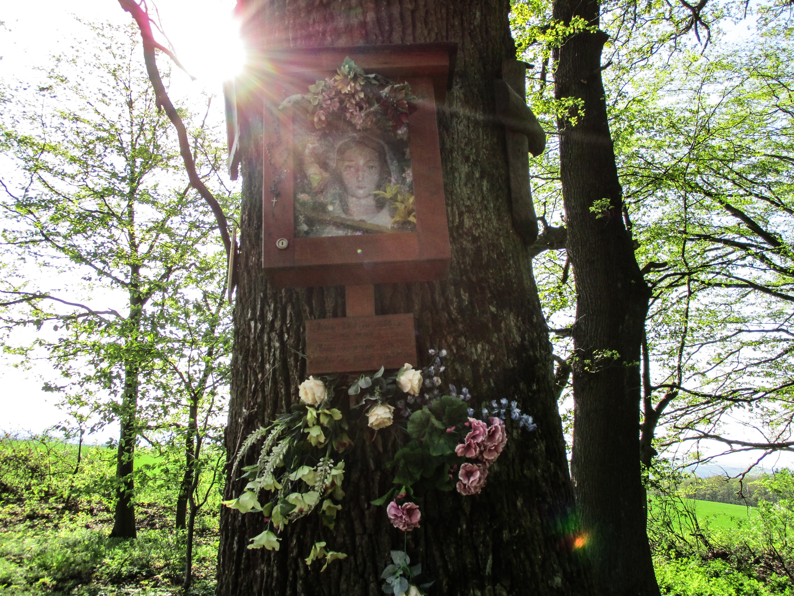
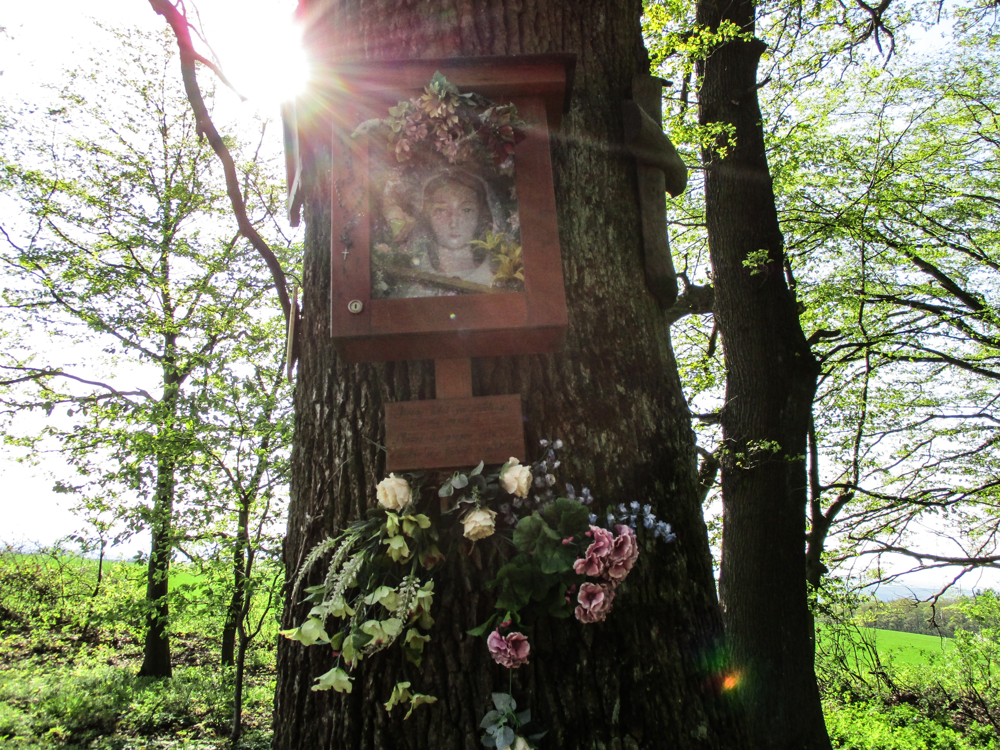

Na místě zvaném „u Kameňa“ se setkávají katastry tří obcí, Komárova, Topolné a Březolup. Spoluprací těchto tří obcí vznikla pěkná tradice každoročního srazu občanů na tomto místě. Obce se pravidelně střídají v zajištění občerstvení a zábavného programu.
V dávných dobách procházela tímto místem formanská cesta, je tedy možné, že kámen vyznačující rozhraní obcí mohl být milníkem a obrázky světců na kmeni stromu připomínkou nějaké dnes již zapomenuté události.